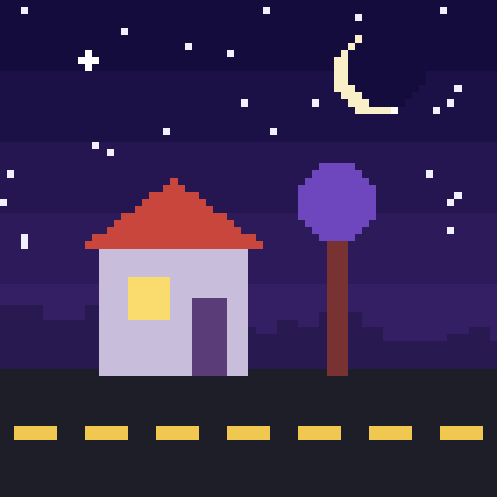

Фритрек и нулевой спринт: Подготовка к работе

Это было самое начало пути. На этом этапе важно было проникнуться основами и настроиться на учёбу. И, возможно, подумать, как новые знания могут повлиять на ваше будущее.
Я пришёл на курс, чтобы разложить по полочкам то, что раньше делал на ощупь. Первые уроки казались простыми, но уже тогда стало ясно: в вёрстке важна каждая мелочь.